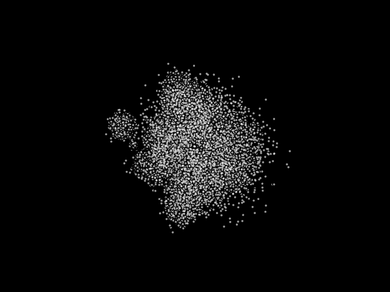

Note
Click here to download the full example code
Create a Point Cloud#
Demonstrates use of visual.Markers to create a point cloud with a standard turntable camera to fly around with and a centered 3D Axis.
import numpy as np
import vispy.scene
from vispy.scene import visuals
#
# Make a canvas and add simple view
#
canvas = vispy.scene.SceneCanvas(keys='interactive', show=True)
view = canvas.central_widget.add_view()
# generate data
pos = np.random.normal(size=(100000, 3), scale=0.2)
# one could stop here for the data generation, the rest is just to make the
# data look more interesting. Copied over from magnify.py
centers = np.random.normal(size=(50, 3))
indexes = np.random.normal(size=100000, loc=centers.shape[0]/2.,
scale=centers.shape[0]/3.)
indexes = np.clip(indexes, 0, centers.shape[0]-1).astype(int)
scales = 10**(np.linspace(-2, 0.5, centers.shape[0]))[indexes][:, np.newaxis]
pos *= scales
pos += centers[indexes]
# create scatter object and fill in the data
scatter = visuals.Markers()
scatter.set_data(pos, edge_color=None, face_color=(1, 1, 1, .5), size=5)
view.add(scatter)
view.camera = 'turntable' # or try 'arcball'
# add a colored 3D axis for orientation
axis = visuals.XYZAxis(parent=view.scene)
if __name__ == '__main__':
import sys
if sys.flags.interactive != 1:
vispy.app.run()
Total running time of the script: ( 0 minutes 4.381 seconds)